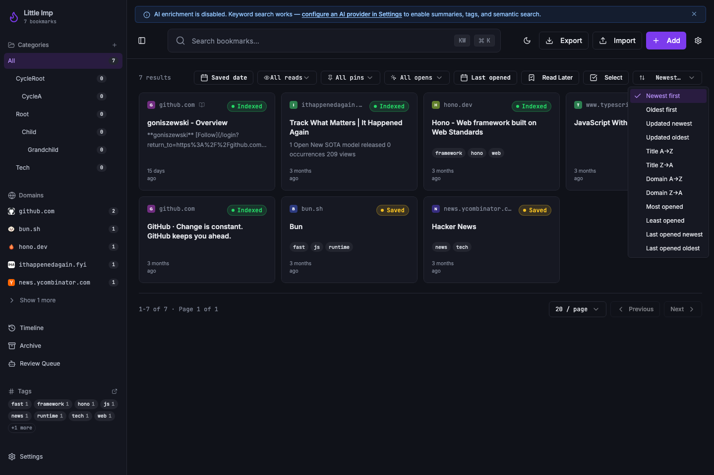
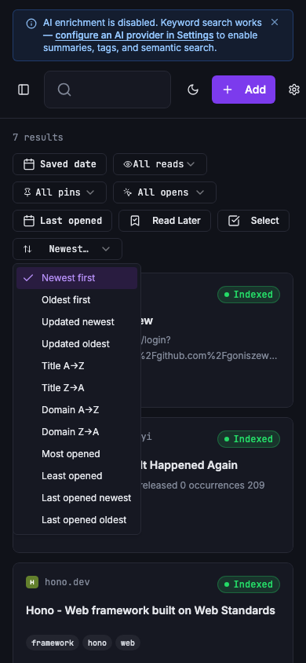

Little Imp Task Report
Server Driven Sorting

Before
The daemon returned bookmark pages in hard-coded orders, while the frontend re-sorted only the already loaded page. That meant title or domain sorting could not be correct across paginated result sets.
Problem
TASK-115 needed list and search endpoints to apply approved sort keys before pagination, reject unsupported sort input, and keep ordering stable for equal values.
Changes Added
- Added daemon sort validation for
created_at,updated_at,title,domain,opened_count, andlast_opened_atwithascordescdirection. - Applied SQL ordering before pagination in bookmark lists and keyword search, with deterministic tie-breakers.
- Applied equivalent in-memory ordering for semantic and hybrid search when a sort key is requested.
- Kept hybrid search keyword candidate selection relevance-ranked before applying a final requested sort.
- Extended the central frontend API client and
useBookmarkshook so the sort selector sends daemon query parameters instead of reordering the current page. - Kept the central API client from serializing
directionunless a validsortkey is present. - Updated the generated API contract, Markdown API docs, and OpenAPI output with the new query parameters.
Result
Library and search pages now sort at the daemon layer before limit and offset are applied. The frontend keeps the returned page order intact, so sorting remains coherent across pages.
Verification
bun test src/test/bookmark-repository.test.ts src/test/search-repository.test.ts src/test/integration/bookmarks.test.ts src/test/integration/search.test.tspassed with 97 daemon tests.npm run test -- src/hooks/use-bookmarks.test.ts src/lib/api.test.tspassed with 51 frontend/API tests.npm run docs:apiregeneratedAPI.md,docs/api-contract.json, anddocs/openapi.json.npm run docs:api:checkpassed and confirmed generated API docs are up to date.npx tsc --noEmitpassed.npm run lintpassed with no errors and 8 existing Fast Refresh warnings.npm run type-checkpassed.npm run testpassed with 264 frontend/unit tests.npm run test:daemonpassed with 450 daemon tests.npm run test:e2epassed with 21 Chromium tests.npm run buildpassed with existing Browserslist and chunk-size warnings.- Manual visual check captured expanded sort menus on desktop and narrow mobile widths against
http://127.0.0.1:8080/.
Implementation Notes
The default frontend sort maps to sort=created_at&direction=desc. Existing daemon callers that omit sort parameters retain the legacy list fallback order. Last-opened sorts place never-opened bookmarks after rows with a real last-opened timestamp.
Additional Screenshots

Files Changed
daemon/src/db/bookmark-filters.tsdaemon/src/db/bookmark-repository.tsdaemon/src/db/search-repository.tsdaemon/src/routes/bookmark-filter-query.tsdaemon/src/routes/bookmarks.tsdaemon/src/routes/search.tsdaemon/src/api/contract.tssrc/lib/api.tssrc/hooks/use-bookmarks.tssrc/pages/Index.tsx